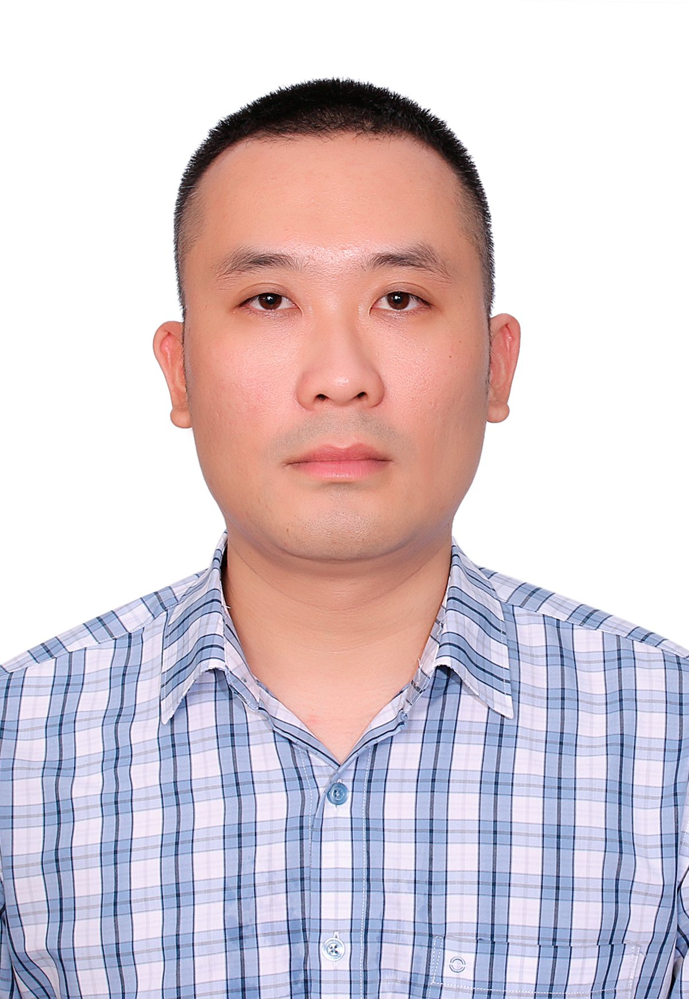

Assoc. Prof. Le Dinh Anh
Principal Investigator
Applied Fluid Mechanics Research Group · UET – VNU
Email: anhld@vnu.edu.vn
Google Scholar:
Google Scholar Profile
Academic profile
Research Interests
- Cavitation
- Renewable Energy: Wind/Hydrokinetic Turbines
- Hydro–Aerodynamic Optimization
Short Bio
Assoc. Prof. Le Dinh Anh is the principal investigator of the Applied Fluid Mechanics Research Group. He received his MSc and PhD degrees from Tohoku University, Japan, in the field of Fluid Mechanics. Currently, he is a lecturer at the School of Aerospace Engineering, VNU University of Engineering and Technology. His research focuses on cavitation and multiphase flows, renewable energy systems including wind and hydrokinetic turbines, and hydro–aerodynamic optimization using CFD and EFD techniques.
Editorial Activities
- Scientific Secretary, Editorial Board: Vietnam Journal of Mechanics (2026–2031)
- Special Issue Guest Editor: CMES – Computer Modeling in Engineering & Sciences – "Advances in Modeling and Simulation of Fluid Flows"
Awards & Honors
- Nguyen Van Dao Mechanics Talent Award (2026)
- Emulation Fighter Award, Ministry of Education and Training (MOET), Vietnam (2024)
- Certificate of Merit from the President of Vietnam National University, Hanoi (VNU) for outstanding achievements in research and innovation (2024, 2023, 2022)
- VinIF Domestic Postdoctoral Research Fellowship (2024, 2022)
- Certificate of Merit from the Minister of Education and Training, Vietnam (2024)
- Golden Globe Award in Science and Technology (2023)
- Creative Youth Medal, Vietnam (2023)
- Outstanding Paper Award, 23rd National Conference on Hydro–Aerodynamics (2023)
- Outstanding Young Faculty Member, University of Engineering and Technology, VNU (2022)
- Postdoctoral Research Fellowship, Vietnam National University, Hanoi (VNU) (2021)
- Tohoku University President Fellowship, Tohoku, Japan (2017-2019)